QR код на сайт
Устройство PGDATA
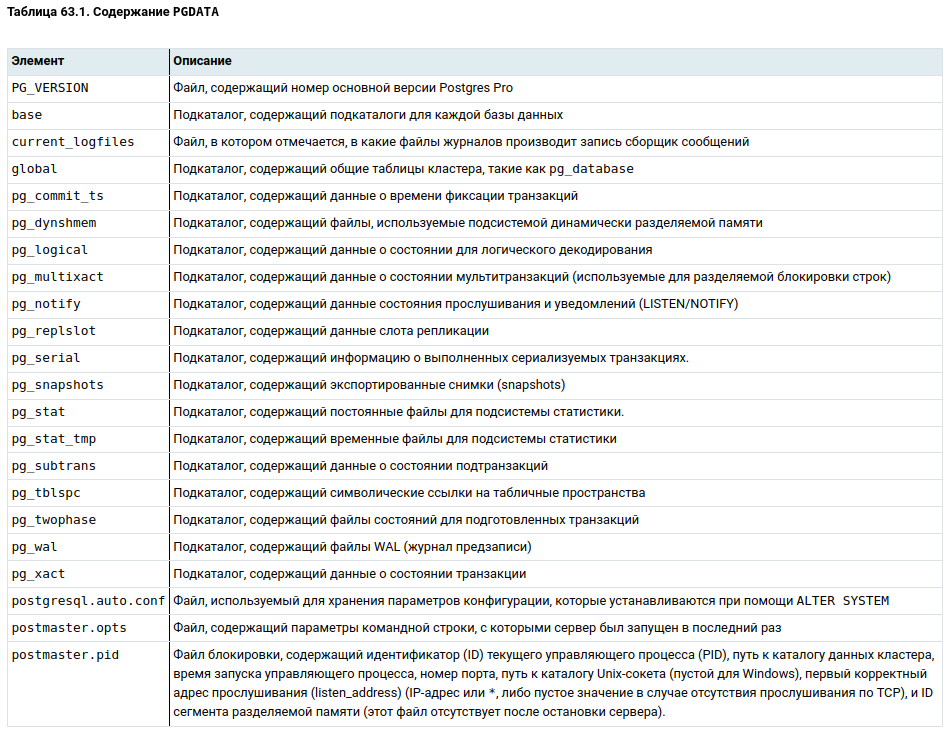
template0 используется, например, для восстановления из логической резервной копии или для создания базы в другой кодировке и никогда не
должна меняться;
template1 служит шаблоном для всех остальных баз данных, которые может
создать пользователь в этом кластере;
postgres представляет собой обычную базу данных, которую можно использовать по своему усмотрению.
CREATE database users;
CREATE DATABASE new TEMPLATE users;
Системный каталог
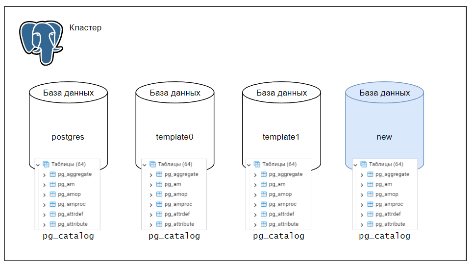Schema (namespace)
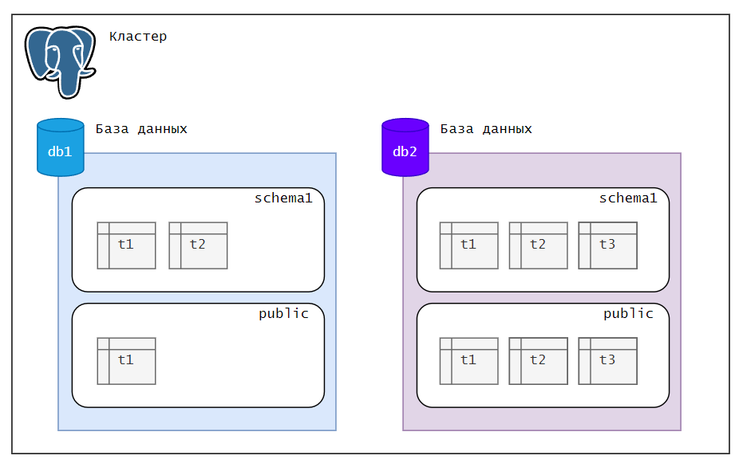Кроме пользовательских схем, имеется несколько специальных служебных:
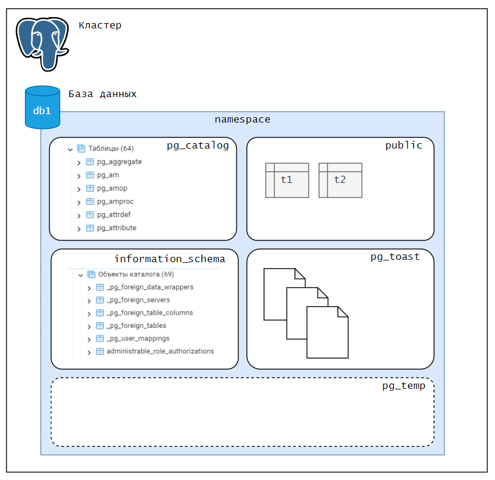При инициализации кластера создаются два табличных пространства:
- pg_default располагается в каталоге PGDATA/base и используется как табличное пространство по умолчанию,
если явно не выбрать для этой цели другое пространство; - pg_global располагается в каталоге PGDATA/global и хранит общие для всего кластера объекты системного каталога.
CREATE TABLESPACE fastspace LOCATION '/ssd1/postgresql/data';
CREATE INDEX code_idx ON films (code) TABLESPACE fastspace;
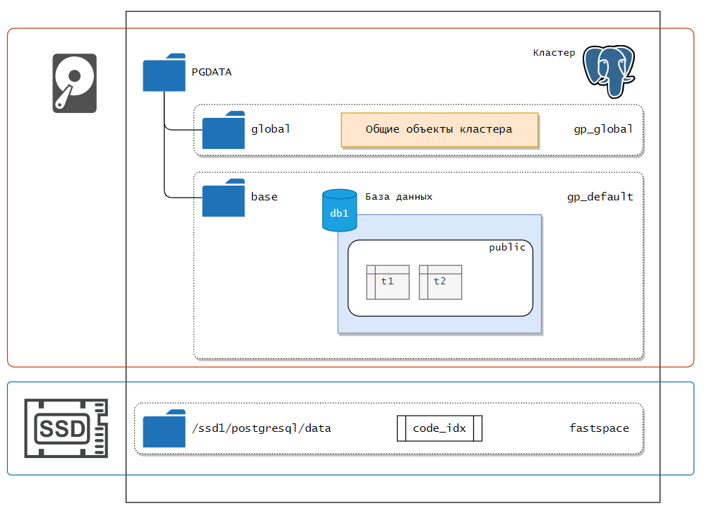
Небольшой эксперимент
CREATE TABLE IF NOT EXISTS test_table (
id SERIAL PRIMARY KEY,
text_column TEXT
);
INSERT INTO test_table (text_column ) VALUES ('HELLO WORLD' );
INSERT INTO test_table (text_column)
SELECT md5(random()::text)
FROM generate_series(1, 99) AS gs;
postgres=# SELECT * FROM pg_database WHERE datname = 'postgres'\gx
-[ RECORD 1 ]--+------------
oid | 5
datname | postgres
datdba | 10
encoding | 6
datlocprovider | c
datistemplate | f
datallowconn | t
dathasloginevt | f
datconnlimit | -1
datfrozenxid | 740
datminmxid | 1
dattablespace | 1663
datcollate | ru_RU.UTF-8
datctype | ru_RU.UTF-8
datlocale |
daticurules |
datcollversion | 2.35
datacl |
postgres=# SELECT * FROM pg_class where relname = 'test_table'\gx
-[ RECORD 1 ]-------------------------
oid | 16434
relname | test_table
relnamespace | 2200
reltype | 16436
reloftype | 0
relowner | 10
relam | 2
relfilenode | 16434
reltablespace | 0
relpages | 0
reltuples | -1.0
relallvisible | 0
reltoastrelid | 16438
relhasindex | True
relisshared | False
relpersistence | p
relkind | r
relnatts | 2
relchecks | 0
relhasrules | False
relhastriggers | False
relhassubclass | False
relrowsecurity | False
relforcerowsecurity | False
relispopulated | True
relreplident | d
relispartition | False
relrewrite | 0
relfrozenxid | 750
relminmxid | 1
relacl |
reloptions |
relpartbound |
Формат pg_filenode.map
// src/backend/utils/cache/relmapper.c:165 RelationMapOidToFilenumber()
typedef struct RelMapping
{
Oid mapoid; // OID таблицы
Oid mapfilenode; // Физический файл
};
typedef struct RelMapFile
{
int32 magic;
int32 num_mappings;
RelMapping mappings[MAX_MAPPINGS];
pg_crc32c crc;
int32 pad; // Итого: 512 байт
};
Узнаем путь к отношению через sql
# src/backend/utils/adt/dbsize.c:969 pg_relation_filepath
postgres=# select pg_relation_filepath('test_table');
pg_relation_filepath
----------------------
base/5/16434
(1 row)
Table
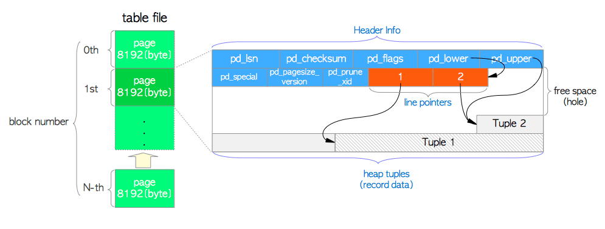Heap
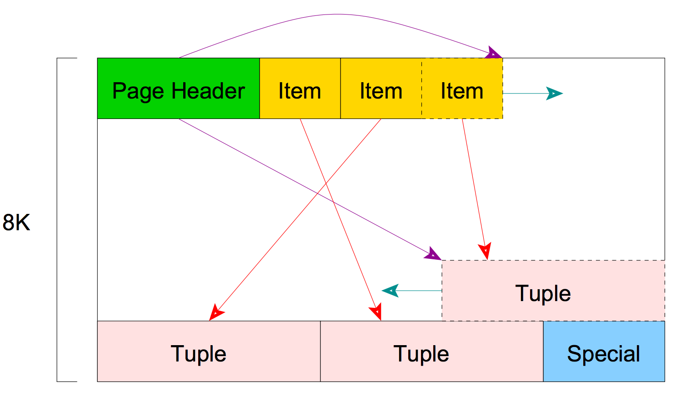
// src/include/storage/itemid.h
typedef struct ItemIdData
{
unsigned lp_off:15, /* offset to tuple (from start of page) */
lp_flags:2, /* state of line pointer, see below */
lp_len:15; /* byte length of tuple */
} ItemIdData;
// src/include/storage/block.h
typedef uint32 BlockNumber;
typedef struct BlockIdData
{
uint16 bi_hi;
uint16 bi_lo;
} BlockIdData;
Устройство tuple
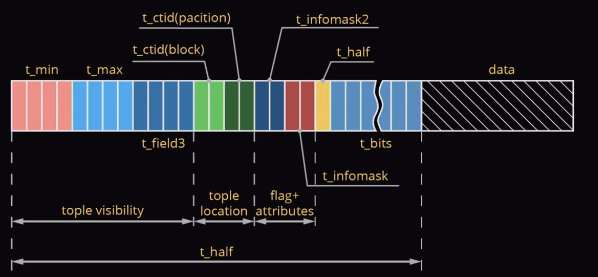
// src/include/storage/bufpage.h
typedef struct PageHeaderData
{
/* XXX LSN is member of *any* block, not only page-organized ones */
PageXLogRecPtr pd_lsn; /* LSN: next byte after last byte of xlog
* record for last change to this page */
uint16 pd_checksum; /* checksum */
uint16 pd_flags; /* flag bits, see below */
LocationIndex pd_lower; /* offset to start of free space */
LocationIndex pd_upper; /* offset to end of free space */
LocationIndex pd_special; /* offset to start of special space */
uint16 pd_pagesize_version;
TransactionId pd_prune_xid; /* oldest prunable XID, or zero if none */
ItemIdData pd_linp[FLEXIBLE_ARRAY_MEMBER]; /* line pointer array */
} PageHeaderData;
Обращение к куче при запросах
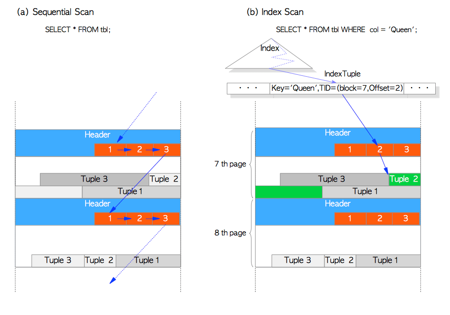
SELECT ctid, xmin, xmax, * FROM test_table;
ctid | xmin | xmax | ctid | id | text_column
---------+------+------+---------+-----+----------------------------------
(0,1) | 739 | 0 | (0,1) | 1 | HELLO WORLD
(0,2) | 740 | 0 | (0,2) | 2 | f47b7fef03784f640697705f02fe427b
(0,3) | 740 | 0 | (0,3) | 3 | d318ba417b95f1b041b63248ac0875c0
(0,4) | 740 | 0 | (0,4) | 4 | 5791ca8eb2cab64331d7476190529ead
postgres=# UPDATE test_table SET text_column = 'HELLO WORLD2' WHERE id = 2;
postgres=# SELECT ctid, xmin, xmax, * FROM test_table ORDER BY id;
ctid | xmin | xmax | id | text_column
---------+------+------+-----+----------------------------------
(0,1) | 739 | 0 | 1 | HELLO WORLD
(0,101) | 742 | 0 | 2 | HELLO WORLD2
(0,3) | 740 | 0 | 3 | d318ba417b95f1b041b63248ac0875c0
(0,4) | 740 | 0 | 4 | 5791ca8eb2cab64331d7476190529ead
SELECT * FROM page_header(get_raw_page('public.test_table', 0));
lsn | checksum | flags | lower | upper | special | pagesize | version | prune_xid
-----------+----------+-------+-------+-------+---------+----------+---------+-----------
0/15B1450 | 0 | 0 | 428 | 1768 | 8192 | 8192 | 4 | 754
(1 row)
SELECT t_attrs
FROM heap_page_item_attrs(get_raw_page('test_table', 0), 'test_table'::regclass, true);
SELECT CONVERT_FROM(DECODE(SUBSTRING(t_attrs[2]::text FROM 3), 'hex'), 'UTF8')
FROM heap_page_item_attrs(get_raw_page('test_table', 0), 'test_table'::regclass, true);
HELLO WORLD
5c6f2ab6fc2a42652ff807d67279fb69
38e34758b6783f06576614db2948dc0f
eb52d7e71c00fb27f3b9796555a779ed
efae7f69701112f0b496d90209d5f6b7
....
....
7af14e7c5005fa2f4850eeda682f3a68
HELLO WORLD2
(101 rows)
- tuple = header + user data
- DELETE = UPDATE xmax
- UPDATE = INSERT + DELETE
Вставка данных в Page
// src/backend/storage/page/bufpage.c
OffsetNumber
PageAddItemExtended(Page page, Item item, Size size,
OffsetNumber offsetNumber, int flags)
{
PageHeader phdr = (PageHeader) page;
// Проверка корректности заголовка страницы
if (phdr->pd_lower < SizeOfPageHeaderData ||
phdr->pd_lower > phdr->pd_upper ||
phdr->pd_upper > phdr->pd_special ||
phdr->pd_special > BLCKSZ)
ereport(PANIC, errmsg("corrupted page pointers"));
// Вычисляем границу вставки:
// текущий максимум offsetNumber + 1,
// то есть следующая позиция после последнего занятого ItemId.
// Используется как ограничение и значение по умолчанию,
// если не найдено свободного слота в line pointer array.
limit = OffsetNumberNext(PageGetMaxOffsetNumber(page));
// Если offsetNumber не задан вызывающим кодом (некорректен),
// ищем первый свободный слот (дырку) в line pointer array.
// Если свободных слотов нет, будем вставлять в конец — в позицию limit.
if (!OffsetNumberIsValid(offsetNumber))
offsetNumber = найти_первый_свободный_или_limit();
// Проверка: offsetNumber не должен выходить за пределы доступного диапазона.
// 1) Нельзя вставлять дальше, чем limit (т.е. следующий свободный слот),
// 2) Для heap-страниц накладывается ограничение: нельзя превысить
// MaxHeapTuplesPerPage (т.е. максимальное количество кортежей в heap-странице).
if (offsetNumber > limit ||
((flags & PAI_IS_HEAP) && offsetNumber > MaxHeapTuplesPerPage))
return InvalidOffsetNumber;
// Проверка, влезет ли кортеж
alignedSize = MAXALIGN(size);
lower = phdr->pd_lower + sizeof(ItemIdData);
upper = phdr->pd_upper - alignedSize;
if (lower > upper)
return InvalidOffsetNumber;
// Сдвиг указателей, если вставка не в конец
if (нужно_сдвинуть)
memmove(...);
// Установка line pointer и вставка данных
ItemIdSetNormal(itemId, upper, size);
memcpy(page + upper, item, size);
// Обновление границ страницы
phdr->pd_lower = lower;
phdr->pd_upper = upper;
return offsetNumber;
}
Стратегии хранения
- PLAIN(bool, char..)
- EXTENDED(TOAST включён: TEXT, JSONB, ...)
- EXTERNAL = EXTENDED - сжатие(по умолчанию не используется)
- Main - Сжимать данные, но пытаться хранить их в самом кортеже
ALTER TABLE table_name ALTER COLUMN name SET STORAGE external;
ALTER TABLE table_name ALTER COLUMN name SET COMPRESSION lz4;
Алгоритм в 4 прохода
- Только для EXTENDED и EXTERNAL атрибутов. EXTENDED атрибуты сжимаются. Если размер атрибута превышает 2 Кб, он нарезается в TOAST-таблицу;
- Только для EXTENDED и EXTERNAL атрибутов. В этот раз все атрибуты нарезаются в TOAST-таблицу, безотносительно их размера;
- Только для MAIN атрибутов. Они сжимаются, но не нарезаются в TOAST-таблицу;
- Только для MAIN атрибутов. Если дело дошло до этого прохода, значит мы в беде. MAIN атрибуты нарезаются в TOAST-таблицу;
postgres=# SELECT typname, typlen, typstorage
FROM pg_type LIMIT 3;
typname | typlen | typstorage
----------------------------------------+--------+------------
bool | 1 | p
bytea | -1 | x
char | 1 | p
postgres=# SELECT relname
FROM pg_class
WHERE relnamespace = 'public'::regnamespace
AND relname LIKE 'pg_toast_%'
AND reltoastrelid = 'public.test_table'::regclass;
relname
---------
(0 rows)
SELECT relnamespace::regnamespace, relname
FROM pg_class WHERE oid = (
SELECT reltoastrelid FROM pg_class WHERE relname = 'test_table'
);
relnamespace | relname
--------------+----------------
pg_toast | pg_toast_16434
postgres=# UPDATE test_table
SET text_column = (
SELECT string_agg(chr(trunc(65 + random() * 26)::integer), '')
FROM generate_series(1, 5000)
)
RETURNING left(test_table.text_column, 10) || '...' || right(test_table.text_column, 10);
SELECT chunk_id,
chunk_seq,
length(chunk_data),
left(encode(chunk_data,'escape')::text, 10) || '...' ||
right(encode(chunk_data,'escape')::text, 10)
FROM pg_toast.pg_toast_16434;
chunk_id | chunk_seq | length | ?column?
----------+-----------+--------+-------------------------
16755 | 0 | 1996 | MBDOFXFDIG...GVQLXBIKSD
16755 | 1 | 1996 | APCPZXDYWB...WFVSPVRZNP
16755 | 2 | 1008 | GVIAGQUBMB...NYVRKIKSCJ
16756 | 0 | 1996 | MBDOFXFDIG...GVQLXBIKSD
16756 | 1 | 1996 | APCPZXDYWB...WFVSPVRZNP
16756 | 2 | 1008 | GVIAGQUBMB...NYVRKIKSCJ
16757 | 0 | 1996 | MBDOFXFDIG...GVQLXBIKSD
Карта видимости(visibility map)

на каждую табличную страницу в слое определены два бита:
- Страницы, которые содержат только актуальные версии строк.
- Все версии строк заморожены.
Страницы карты видимости представляют собой обычные страницы с заголовком PageHeaderData. Работа с ними осуществляется через разделяемые буферы, как и с обычными страницами. Разница лишь в том, что в VM за заголовком лежит битовая маска, а не кортежи с массивом ItemIdData.
VM оптимизирует работу VACUUM, помечая некоторые страницы "полностью видимыми" (проставлена единица в битовой карте). В такие страницы VACUUM не заходит при сканировании таблицы. Бит видимости проставляется при выполнении VACUUM и снимается при выполнении операций INSERT, UPDATE, DELETE.
// src/backend/access/heap/visibilitymap.cСтраницы карты видимости представляют собой обычные страницы с заголовком PageHeaderData. Работа с ними осуществляется через разделяемые буферы, как и с обычными страницами. Разница лишь в том, что в VM за заголовком лежит битовая маска, а не кортежи с массивом ItemIdData.
/* Masks for counting subsets of bits in the visibility map. */
#define VISIBLE_MASK8 (0x55) /* The lower bit of each bit pair */
#define FROZEN_MASK8 (0xaa) /* The upper bit of each bit pair */
// src/backend/access/heap/visibilitymap.c
* INTERFACE ROUTINES
* visibilitymap_clear - clear bits for one page in the visibility map
* visibilitymap_pin - pin a map page for setting a bit
* visibilitymap_pin_ok - check whether correct map page is already pinned
* visibilitymap_set - set a bit in a previously pinned page
* visibilitymap_get_status - get status of bits
* visibilitymap_count - count number of bits set in visibility map
* visibilitymap_prepare_truncate -
* prepare for truncation of the visibility map
Подсчёт битов видимости
void
visibilitymap_count(Relation rel, BlockNumber *all_visible, BlockNumber *all_frozen)
{
BlockNumber mapBlock;
BlockNumber nvisible = 0;
BlockNumber nfrozen = 0;
/* all_visible must be specified */
Assert(all_visible);
for (mapBlock = 0;; mapBlock++)
{
Buffer mapBuffer;
uint64 *map;
/*
* Read till we fall off the end of the map. We assume that any extra
* bytes in the last page are zeroed, so we don't bother excluding
* them from the count.
*/
mapBuffer = vm_readbuf(rel, mapBlock, false);
if (!BufferIsValid(mapBuffer))
break;
/*
* We choose not to lock the page, since the result is going to be
* immediately stale anyway if anyone is concurrently setting or
* clearing bits, and we only really need an approximate value.
*/
map = (uint64 *) PageGetContents(BufferGetPage(mapBuffer));
nvisible += pg_popcount_masked((const char *) map, MAPSIZE, VISIBLE_MASK8);
if (all_frozen)
nfrozen += pg_popcount_masked((const char *) map, MAPSIZE, FROZEN_MASK8);
ReleaseBuffer(mapBuffer);
}
*all_visible = nvisible;
if (all_frozen)
*all_frozen = nfrozen;
}
Free space MAP
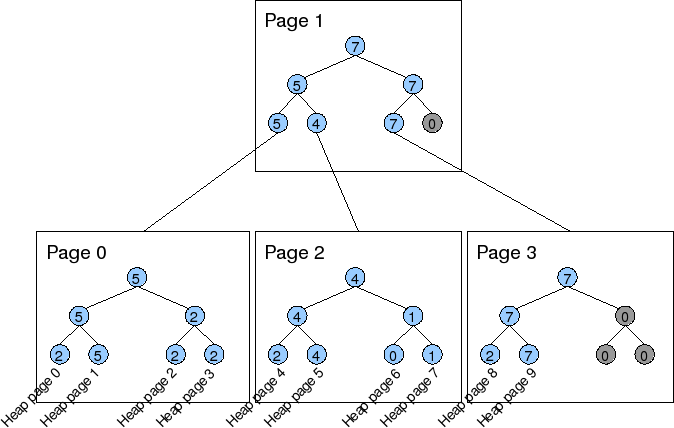Каждая таблица имеет FSM файл ((filenode)_ fsm), который хранит информацию о свободном месте, доступном в таблице. Информация в этом файле обновляется такими операциями, как VACUUM и вообще говоря может быть не абсолютно точной. FSM показывает, какие элементы были удалены или обновлены и их место может быть повторно переиспользовано. Данные в FSM организованы в виде дерева (в листьях хранится число свободных элементов на странице), чтобы можно было быстро найти страницу с требуемым числом свободных элементов.
Вставляем строчки в таблицу напрямую
#include "postgres.h"
#include "fmgr.h"
#include "access/htup_details.h"
#include "access/xact.h"
#include "catalog/pg_type.h"
#include "commands/sequence.h"
#include "utils/rel.h"
#include "utils/elog.h"
#include "utils/builtins.h"
#include "access/table.h"
#include "catalog/namespace.h"
#include "utils/lsyscache.h"
#include "access/heapam.h"
#ifdef PG_MODULE_MAGIC
PG_MODULE_MAGIC;
#endif
PG_FUNCTION_INFO_V1(heap_inserted);
Datum
heap_inserted(PG_FUNCTION_ARGS)
{
char *input = text_to_cstring(PG_GETARG_TEXT_PP(0));
Relation rel;
HeapTuple tuple;
Datum values[2];
bool nulls[2] = {false, false};
TupleDesc tupdesc;
Oid relid;
relid = RelnameGetRelid("heap_test");
if (relid == InvalidOid)
{
elog(ERROR, "Relation not found");
}
rel = table_open(relid, RowExclusiveLock);
tupdesc = RelationGetDescr(rel);
values[0] = 1;
values[1] = CStringGetTextDatum(input);
tuple = heap_form_tuple(tupdesc, values, nulls);
simple_heap_insert(rel, tuple);
table_close(rel, RowExclusiveLock);
PG_RETURN_VOID();
}
Задача - Access Scan Column HEAP
SELECT access_scan_column('table_name'::regclass, 'column_name');
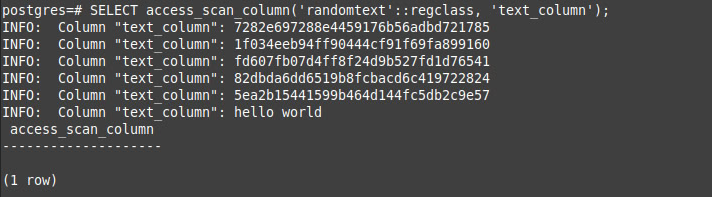
Задача - Access Scan Column HEAP
- PG_GETARG_OID, PG_GETARG_TEXT_PP
- text_to_cstring
- relation_open, RelationGetDescr
- SPI_fnumber или цикл по RelationGetDescr->natts TupleDescAttr и сверка с column_name
- table_beginscan, heap_getnext, heap_getattr(column_number)
- elog, TextDatumGetCString, DatumGetInt32
- table_endscan, relation_close